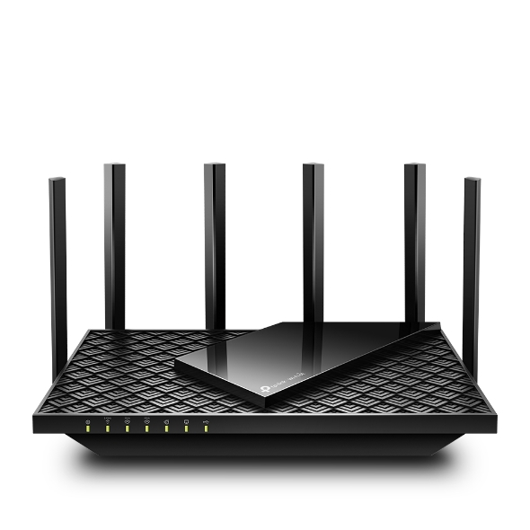
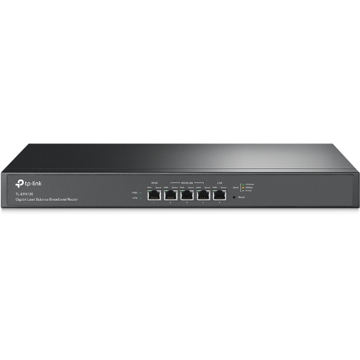

TL-WR840N
300Mbps Wireless N Router
- 5 x 10/100M Ports
- 300Mbps wireless transmission rate ideal for both bandwidth sensitive tasks and basic work
- Supports 4 modes: Router, Range Extender, Access Point and WISP modes
- Parental Controls manage when and how connected devices can access the internet
- IPTV supports IGMP Proxy/Snooping, Bridge and Tag VLAN to optimize IPTV streaming compatible with IPv6 (Internet Protocol version 6)
- Guest Network provides separate access for guests while securing the home network
- See More
TD-W9960
300Mbps Wireless N VDSL/ADSL Modem Router
- Versatile Connectivity -- With DSL and LAN/WAN ports, TD-W9960 is fully compatible with the VDSL2/ADSL2+/ADSL2/ADSL standards and also works with fiber/cable access.
- Boosted Speeds -- Superfast VDSL broadband speeds of up to 100Mbps together with 300Mbps Wi-Fi.
- Maximized Range -- Powerful external antennas provide far-reaching wireless coverage in every direction.
- Effortless Management -- Set up in minutes with the powerful Tether app or intuitive web interface and manage the network from anywhere.
- See More

Archer A6
AC1200 Wireless MU-MIMO Gigabit Router
- 867 Mbps + 300 Mbps -- Simultaneous 2.4GHz 300 Mbps and 5GHz 867 Mbps connections for 1200 Mbps of total available bandwidth
- 5 x Gigabit Ports
- Supports 802.11ac standard
- 4 external antennas and one internal antenna provide stable wireless connections and optimal coverage
- Easy network management at your fingertips with TP-Link Tether
- MU-MIMO achieves 2X efficiency by communicating with up to 2 devices at once
- Beamforming technology delivers wider wireless coverage
- Supports Access Point mode to create a new Wi-Fi access point
- See More
Archer C80
AC1900 Wireless MU-MIMO Wi-Fi Router
- 5 x Gigabit Ports
- 802.11ac Wave2 Wi-Fi -- 1300 Mbps on the 5 GHz band and 600 Mbps on the 2.4 GHz band.
- 3 x 3 MIMO Technology -- Transmitting and receiving data on three streams to pair flawlessly with your 3 x 3 clients.
- Boosted Wi-Fi Coverage -- Beamforming technology delivers a highly efficient wireless connection.
- MU-MIMO -- To help your devices achieve optimal performance by making communication more efficient.
- Personalized Management -- Advanced features like Parental Controls, Guest Network, and Access Control provide individualized tools for network management.
- Intelligent Connection -- Smart Connect directs clients to the less congested band and Airtime Fairness optimizes the time usage.
- See More
Archer VR600V
AC1600 WLAN Telephony DSL Router
- 2 x TAE Ports, 3 x RJ11 Ports 1 x USB 2.0 Port
- AC1600 Dual-Band Wi-Fi -- Two separate Wi-Fi bands combine for speeds of up to 1600 Mbps: 300 Mbps (2.4GHz) and 1300 Mbps (5GHz)
- Superior Coverage -- 3 dual band high performance antennas provide maximum omni-directional wireless coverage with beamforming technology
- 100Mbps VDSL -- Fully compatible with VDSL2/ADSL2+/ADSL2/ADSL standard
- HD Quality Telephony -- Support up to six digital handsets with an integrated DECT base, as well as two analog telephones or fax machines, and integrated 270 minutes voice mail
- 4 Gigabit LAN Ports -- Up to 10x faster than standard Ethernet, deliver lightning-fast wired performance
- USB 2.0 Port -- Support Storage Sharing (Samba or FTP), Media &Print
- TP-Link Tether App -- Easily access and manage your network, including remote control and automatic updates, using any iOS or Android mobile device
- See More
Archer AX55
AX3000 Dual Band Gigabit Wi-Fi 6 Router
- 5 x Gigabit Ports and 1 x USB 3.0 Port and Dual-Core CPU
- Next-Gen Gigabit Wi-Fi 6 Speed -- 2402 Mbps on 5 GHz and 574 Mbps on 2.4 GHz band ensure smoother streaming and faster downloads.
- Connect More Devices -- OFDMA technology increases capacity by 4 times to enable simultaneous transmission to more devices.
- Ultra-Low Latency -- Enables more responsive gaming and video chatting.
- Expanded Wi-Fi Coverage -- Four high-gain external antennas and Beamforming technology combine to extend strong, reliable Wi-Fi throughout your home.
- TP-Link HomeShield -- Enhanced security defends against the latest cyber threats.
- Improved Battery Life -- Target Wake Time helps your devices to communicate more while consuming less power.
- Compatible with Alexa -- Control your router via voice commands and make your life smarter and easier with Amazon Alexa.
- See More
Archer MR600
4G+ Cat6 AC1200 Wireless Dual Band Gigabit Router
- 867 Mbps + 300 Mbps
- TP-Link's First 4G+ Router -- supports 4G+ Cat6 to boost the data speeds of up to 300 Mbps*
- Plug a SIM card and play -- no configurations needed, compatibility of SIM cards in 100+ countries are assured by years of field tests
- MU-MIMO supported -- simultaneous data streams increase WiFi throughput and network efficiency.
- Supports TP-Link OneMeshTM -- co-works with TP-Link OneMesh products to create a flexible and cost-efficient Mesh network
- Better Signal for Connections Everywhere -- enjoy stable and efficient connections to every device thanks to the two external LTE antennas
- 4 Full Gigabit Ports -- provides reliable wired connections for bandwidth-intensive devices such as game consoles and STB
- Wi-Fi router mode -- plug an Ethernet cable into the LAN/WAN port for flexible access as a backup option if you can't get a 4G connection
- Easy setup and management all by Tether app
- See More

Archer AXE75
Archer AXE75
Tri-Band Gigabit Wi-Fi 6E Router
- 2402Mbps + 2402 Mbps + 574 Mbps 5 x Gigabit Ports
- Tri-Band Wi-Fi -- Delivers Wi-Fi speeds up to 5400 Mbps.
- Cutting-Edge Processing -- Armed with a 1.7 GHz Quad-Core CPU.
- SuperSpeed USB 3.0 -- Up to 10 x faster transfer speeds than USB 2.0.
- Wi-Fi 6E Unleashed -- The brand new 6 GHz band brings more bandwidth, faster speeds, and near-zero latency.
- HomeShield -- Customize your home network with enhanced security and control.
- OneMesh -- Creates a Mesh network by connecting to a TP-Link OneMesh Extender for seamless whole-home coverage.
- Connect More Devices -- OFDMA technology increases capacity by 4 times to enable simultaneous transmission to more devices.
- Latency -- Enables more responsive gaming and video chatting.
- Compatible with Alexa -- Control your router via voice commands and make your life smarter and easier with Amazon Alexa.
- See More
Archer GX90
AX6600 Tri-Band Wi-Fi 6 Gaming Router
- 4804 Mbps + 1201 Mbps + 574 Mbps
- 1 x 2.5 Gbps Port + 4 x Gigabit Ports 1 x USB 3.0 Port + 1 x USB 2.0 Port
- Game Band -- Tri-Band structure provides a 4.8 Gbps Game Band exclusive for your gaming rigs and bings pure immersion.
- Game Accelerator -- Detect and optimize gaming streams, to ensure your gaming stays immersive.
- Game Statistics -- Real-time latency, game duration and network resource allocation in a glance with fine-tuned UI.
- Game Protector -- Keep your accounts and documents safe with Homecare security system.
- 2.5 Gbps Wired Connection -- Unleash the potential of your next-level bandwidth network with a 2.5 Gbps WAN/LAN port.
- Powerful Processing -- 1.5 GHz Quad-Core CPU and 3 coprocessors ensure your network performance always at peak run.
- Easy and Smart -- Link to your router via Bluetooth and set it up in minutes with the powerful Tether app.
- See More

TL-ER5120
TL-ER5120
Gigabit Load Balance Broadband Router
- 64-bit dedicated processor and 2 Gbit DDRIII high-speed memory for outstanding performance
- Equipped with 1 Gigabit WAN port, 1 Gigabit LAN port and 3 adaptable Gigabit WAN/LAN ports
- Load Balancing automatically selects the best route to the destination according to the load
- Captive portal provides convenient guest authentication while promoting your business
- Abundant security features including ARP Inspection, DoS Defense, URL/Keyword Domain Filter and Access Control
- Professional 4KV lightning protection keeps your investment safe
- Rackmount
- See More
TL-ER6120
SafeStream Gigabit Multi-WAN VPN Router
- 64-bit network dedicated processor, 512MB DDRIII high-speed memory, for higher business network performance
- Equipped with 1 Gigabit WAN port, 3 Gigabit WAN/LAN ports and 1 Gigabit LAN port
- Supports multiple VPN protocols including IPsec/PPTP/L2TP, helping users to establish VPN connections more flexibly
- Supports up to 100 IPsec VPN tunnels with a hardware-based VPN engine
- Captive portal provides a convenient method for guest authentication Abundant features including load balance, bandwidth control and access control
- Professional 4KV lightning protection keeps your investments as safe as possible
- Rackmount
- See More
Archer AX11000
AX11000 Next-Gen Tri-Band Gaming Router
- 1 x USB-C 3.0 Port + 1 x USB-A 3.0 Port
- The Fastest Gaming Router -- AX11000 speed machine that delivers Wi-Fi Speeds Over 10 Gbps: 4804 Mbps (5 GHz Gaming) + 4804 Mbps (5 GHz) + 1148 Mbps (2.4 GHz)
- Game Accelerator -- Detect and optimize gaming streams, to ensure your gaming stays immersive.
- Game Protector -- Keep your accounts and documents safe with Homecare security system powered by Trend Micro.
- Game Statistics -- Real-time latency, game duration and network resource allocation in a glance with fine-tuned UI.
- Ultra Connectivity -- 2.5 Gbps WAN port and eight Gigabit LAN ports, 2 USB 3.0 in Type A and Type C provide extensive connectivity.
- Powerful Processing -- 1.8 GHz Quad-Core CPU and 3 coprocessors ensure your network performance always at peak run.
- Highly Efficient -- OFDMA increases the avg. throughput and reduces the lag.
- Easy and Smart -- Link to your router via Bluetooth and set it up in minutes with the powerful Tether app.
- See More